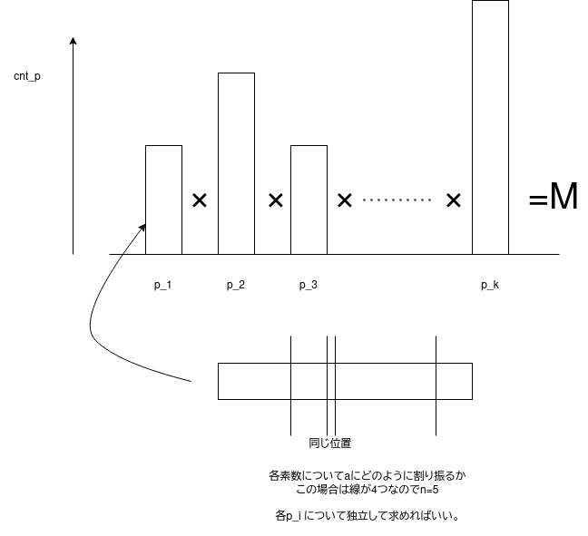

前回に引き続き、100問解きました。 今回はしっかり全部自力で解けましたよ！一部拡張ユークリッドのやり方とかを調べたりとかはしていたけど、解説ページだけは見ないで頑張った。 自分の解法で押し通す快感は割とすごい。解説を見てダブルで納得するというか、そういうのはかなり楽しい。 #000189 のSmall Multiple とかも、自分はちょっとユニークな解法で通していたのでこれも楽しかった。まあ想定解のほうが効率いいけどね。 でも十分に解ける速さ。
やっぱり、しつこく問題について考えていくと、ちゃんと考察力がついていく感じがします。 ひと目見て解けない問題だったとしても、色々自明なことや気づいたことをまとめていくと、解法が頭から生えるときが時々あって、 それで解けるということがあります。 あと、実際にコードを書いてみて、高速化の方法を思い浮かぶこともあります。Small Multiple はまさにそうでした。
問題はかなり難しくなっている。まず考えても解けない問題に当たる。数日経ってわかる。とか、そういうものがあった。 Difficulty を見てみても、後半の方は青Diff てんこ盛りだったし、一つオレンジがあった。オレンジの中でダントツに Solver 数が多いので おそらく有名な問題なのかな。 あと、割と新しめの問題の水Diffも多かった。これは普通にABC対策というか、そういうものになるし、助かる。 あと、ARCやAGCの問題もでてくるようになった。特にAGCの問題などは、ちょくちょくでてきていて、 やっぱりかなり単純な答えになるものが多い。
そんなこんなで、9/18から10/6までこの100問を解いたわけです。半月程度かかっちゃったので、割とどんな問題があったっけ？って 記憶がちょっと曖昧になってる。問題ごとに覚えているのもいいけど、やっぱり100問まとまりとして感想を生やしたいなぁ。 そしてこれを執筆するのにも時間がかかるのだｗもうちょっと前回より簡素に書くかも。
Solver が 4028 人から 3236 人までの問題でした。
$L$ 以下の値を選ぶみたいなものは大体桁DPである。 今回は上の桁から $a+b$ を決定する。$a+b = 1$ になるのが $2$ 通り、 $a+b = 0$ になるのが $1$ 通りなので、 $L$ を超えないようにDPをすればいい。
これ難しいと思う。自分はあまり頭のいい解法を思いつかなかったので、現在の値と、値を何回使ったかみたいなものをキーにして mapでDPを書いた。一応 $M$ の約数以外は考えなくていいので、現在の値のキーも $M$ の約数くらいしか存在してない。 変なDPになってて、自分も何が書いてあるのかよくわからない。なんでこれで通っているんだこれ。エスパーみたいになってしまった。
想定解は割と単純である。$M$ を素因数分解したものを用意する。 各素数が何回使われているかという cnt[p] をとっておく。 数列 $a$ を素数 $p$ をcnt[p] だけ使って構成することを考えると、 $N$ 個の入れ物の中に cnt[p] 個のものを入れる入れ方の数という問題に帰着するのでこれは $_{(N-1)+cnt_p}\mathrm{C}_{N-1}$ 通りある。重複組み合わせというやつ。
実は各素数についてこれを求めて、かけ合わせれば答えになる。 素数が $p_1$ と $p_2$ あるとして、$p_1$ で求めた数列の組み合わせと、 $p_2$ で求めた数列の組み合わせについて、 掛け合わせた数列(実際の意味でその素数たちを$a$ に掛け合わせている) を考えても一つも数列が重複しないからである。 これは $p_1$ と $p_2$ が互いに素であるためである。
よくわからない説明になったけど、要は素数ごとに独立して問題を解いていいので、各素数について重複組み合わせを求めてかけ合わせればいい。
こんなイメージだと思ってもらっていい。素数が $k$ 個あってこれらについて割り振る。 なんか素因数分解するときのイメージをこういうふうに書き上げるとわかりやすいような気がする。 釈然としない説明になったが、まあ振り返れればいいか。
ある位置 $i$ について、$1$ から $i$ までの値において、$1$ 番目, $2$ 番目, ... , $N$ 番目に大きい値の総和 $maxl_i$ を用意する。
同じように、 $i$ から $3N$ までの値において、 $1$ 番目, $2$ 番目, ... , $N$ 番目に小さい値の総和 $minr_i$ を用意する。
これは priority_queue などで管理すれば $O(N \log N)$ 程度で作れるだろう。
この時ある位置 $i$ における $i$ より小さい番号について前半数列にしたもの、 $i+1$ より大きい番号について後半数列にしたもの の中で最大のスコアを取ることができるので、これを $i$ について総当りで見て、一番大きいスコアを見つけたらそれを出力すればいい。
これも少し勉強になった。ある都市からの最短路を作ると、その都市を根とした最短路木というものができるようだ。 もしあるノードに行く通りが $2$ 通りあるなら、それのどちらかを選んでしまっていい。 あるノードについても最短路が確保されるので、それより遠いところについても最短路を結ぶ部分木はちゃんと作られる。
今回はそのような木を形成するだけで問題が解ける。
実装をいかに工夫できるかの問題。確かに、小さいりんごから見てそれが食べ終わるまでにどの程度のりんごを使ったのかみたいなことを 考えて実装する $O(N \log N)$ 解もあるが、これは結構面倒くさい。
やりやすいのは何周したかという回数を $L$ で決め打ちしたときに、りんごを何個食べたかを求めて、 $K$ 以下だったらok, そうでない 場合はng とするような二分探索だろう。 この場合は、ただ、$L$ と $A_i$ のminを取って総和を求めるだけで何個食べたかわかってくれるのでかなりやりやすい。 そしてこの $ok$ を求めて、りんごの数を減らせば、あと残り何個食べればいいかというと、これが $N$ 未満になっているはずなので、 あとはそれをシミュレーションして残りのりんごの数が求まる。
今回は、答えがそのまま二分探索の値になるのではなく、回せる最大の$L$ を求めることで間接的に答えを求めるという 方法で二分探索を使用している。ある知りたい値を求めるときにも二分探索は使える。
塀を無視してつなぐエッジをコスト $1$ で張って、普通に上下左右につなげるエッジをコスト $0$ で張る。 あとは 01BFS をして解ける。 エッジの張り方が多少面倒だが、頑張って張ろう。
まず and, or, xor の処理しかないので他bitに干渉しない。したがってbitごとに独立して計算できる。 各bitごとに、操作 $1$ から $i$ までの合成関数を求めておけばいい。状態数が $0$ と $1$ しかないので、全部配列に入れられる。 この合成関数を言われたとおりに実行すれば時間内に解ける。
合成関数の状態数が少ないときは、合成関数ごとデータでとっておけるんだということを知った。
$(i+j) \equiv t \pmod 3$ を満たすようなマス $(i, j)$ についてある色 $c$ に変えたときのコストというのを $t$ ごとに求めておけばいい。 求めておいて、各 $t$ についてどの色を使うかを全探索する。$t$ は $0, 1, 2$ しかなく、$C \leq 30$ であるので、この処理は $O(C^3)$ となる。全探索すればコストの最小値が求まる。 全体の計算量は $O(CHW + C^3)$ と言ったところになるか。
まずクエリは裏返しになる。こうすると、切断の処理が結合の処理になる。まあこれは常套手段だよね。 こういう問題は連結成分について考えないといけないので、Unionfind を使うわけである。
この際、連結成分にどんなデータをもたせればいいかと言うのが、この問題は複雑なところなのだ。 解の求め方とかそういうのははっきりするけどどうやったらバグらないか？とか簡潔に実装するには？とか考えないといけない。
多分簡潔な実装は、各連結成分のデータに「電気がつながっているか」と「都市の個数」を入れることだろう。 こうすれば各ノードについて平等に扱うことができる。連結成分を代表するノードが都市の方になっていても、 ちゃんとこのデータに対して連結時にマージできれば問題ない。
マージの方法は、２つの連結成分をつなげるときに電気がつながるかを見て、つながる場合は どちらかもともと電気がつながってなかったほうがあればその連結成分にある都市の個数を足す、ということをすれば 新たに電気がつながる都市が何個できるかは判断できるだろう。 あとは、結合する先のノードに、電気がつながるかをorして都市の数は+すれば結合完了となる。
最初に解いた時、電気がつながるかという情報をうまく持たなかったせいで、 unionfind のルートが必ず発電所側になるように実装を変更して、そのルートで都市の数を管理するという事をしていた。 しかも都市の数の総和を求めるためにセグ木でRSQ を持ってくるというわけのわからないことをしていた。 さすがにひどすぎたので今解き直した。ちゃんとわかりやすい実装になった。
後述する #000186 Confluence とかを解く経験をしておくと、Unionfind で連結成分に持たせる情報をどのように扱えばいいか ということの操作に慣れてくるので、Blackout 2 もわかりやすく解けるようになったというわけだった。
全然解法が生えなかった。おそらく典型的な問題なのだろうとは思った。どのように問題にとっつけばいいのかがわからなかった。 なので一回飛ばして、数問解いてからもう一回チャレンジした。
２次元で考えるより１次元の同じ問題を考えたほうがわかりやすいだろうという考察が生えた。仮に $H=1$ としておこう。 この時、マスに対して右に行くほど値が $C$ だけ増えるような、つまり位置が $j$ だとすると $A_j + jC$ になっているような値を 考えた。仮に $B_j$ と置いておこう。 このとき、$i < j$ であるような $i$, $j$ について考えると、$j$ の位置によらず $i$ についての位置を考えるだけでコストを 計算できるようになるという考察ができた。$i+1$ から $W$ までの $B_j$ の値の最小値がわかっていれば (これは右から最小を取るだけで作れる)、 コスト最小であるような $i, j$ の組み合わせを求めることができ、$O(W)$ でもとまるということがわかった。
この問題を 2 次元に適用するときには、$(y_1, x_1)$ と $(y_2, x_2)$ という座標を考える時、 $y_1 < y_2$ かつ $x_1 < x_2$ であるような 組み合わせについて考えることができる。つまり $(y_1, x_1)$ 側から見て右下ということだ。 じゃあ左下はどう考えればいいかというと、これは単純にグリッドを左右にflipして、もう一回同じ処理をすれば見ることができる。 ここで右下にあるものについてのみを考えたいと思う。
具体的には、$B_{y, x} = A_{y, x} + C(y+x)$ であるような $B$ を作る。こうしておくと、$(y_1, x_1)$ について見ている時、 その右下にあるものすべての $B_{y_2, x_2}$ の最小値というものがわかれば、コストについて求めることができる。 その最小値は１次元と同じようにdpなどで求めることができる。 各 $(y_1, x_1)$ について見て、$O(HW)$ で解けるわけである。
コストの求め方は $(y_1, x_1)$ について見ている時、 $A_{y_1, x_1} + minB - C(y_1+x_1)$ と言った具合になる ( $minB$ : $(y_1, x_1)$ より右下にある $(y_2, x_2)$ における $B_{y_2, x_2}$ の最小値)。
ちゃんと考察を生やせば全然わからない問題も解けるということがここでちゃんとわかった。 あと、グリッドについて２つの組み合わせを考えるときには右下の組み合わせに固定してflipするというやり方が使えるということも わかった。
ある日に試合ができる選手がいたら、できるだけ試合をしてしまって大丈夫。 次の試合をする人について考えて試合ができるようになったときにコスト１のエッジを張るような幅優先探索を考える。 これで探索して、最大の日数を記録しておく。そして全部試合が行えていたらその最大の日数を出力。 試合ができていなかったら -1 を出力。
こういう変な幅優先は関数を使うよりも自前で書いたほうが色々自由にかける気がする。
一回 $T$ のことは考えないで自由に料理をとったときに、最後に食べる料理が何がいいかというと、 一番食べる時間が長い料理だということがわかる。そのため $A_i$ を昇順にソートしておくといいことがありそう。
このときこういうナップザックのDPを考える。
dp[i][t] ... $i-1$ までのなんらかの料理を食べ終え、最後に料理 $i$ を注文するときの現在 $t$ まで時間が経過したときの美味しさの最大値
このDP配列を考えたら、最後に dp[i][T] + B[i] について最大値を考えればこの問題はACできる。
塗りつぶしたマスは $N$ 個だから、その周りについて考えてもそこまで見るマスは多くない。 よってmapとかをうまく使うと解ける。
簡素な実装方法は、cnt[y][x] に $(y, x)$ から $(y+2, x+2)$ までの黒いマスの個数を入れることだと思う。 あるマスを黒く塗りつぶしたときに、$(y-2, x-2)$ から $(y, x)$ までのcntに++すればこれを求められる。
最後に参照された cnt について見て、ans[cnt[y][x]]++ をしていく。 何も塗りつぶされていないものについては、(H-2)*(W-2) に参照されたcntの座標の数を引けば求まる。
実装方法を間違えると地獄を見る。やり方によってはTLEする。mapは一度参照されると要素を作ってしまうのでこれに気をつけないといけない。
条件を満たすグラフを現在のグラフから作ることを考えると、あるノード $u$ についていくつかの辺をたどって行けるノード $v$ について すべて有向辺がはられることになる。 したがって $u$ についての答えは ( $u$ から行けるノードの数(自身も含める)) - ( $u$ の出次数) - 1 となる。 $u$ から行けるノードの数は適当に再帰を使えば解けそう。 $O(NM)$ っぽい。ノードの数を高速に調べられるんだったら $O(N+M)$ 解とかもありそうだけど・・・わからない。
どういうものが答えになるかという考察自体はそこまで難しくない。 まず $K$ が奇数で $A$ の要素が全て負だった場合はどうやっても値が負になるので、 絶対値の少ない方から構成して終わり。
逆にそうでない場合はすべて絶対値の大きい方から取ることを考えていい。 $N=K$ で値が負になるときも、$N$ 個すべてとってしまうので同じように考えていい。
まず絶対値の大きい方から $K$ 個取ってみる。この際、値が正になる時はそのまま出力する。 負になる場合は、値を正にする方法として２パターンあり、現在取っている負の数の絶対値の一番小さいものと、 取ってない正の数の絶対値の一番大きいものを入れ替えるという方法と、 現在取っている正の数の絶対の一番小さいものと取っていない負の数の絶対値の一番大きいものを入れ替えるという方法だ。
$N=K$ のときすべてとった値が負でなく、あと $A$ の要素がすべて負でない限りはこのどちらかのパターンで入れ替える方法が見つかるので そのパターンに置いて、値が大きくなる方を選んで値を正にすればいい。
なんかうまく不等式を作って下しあ。かなり面倒くさい感じにはなるが頑張るとACできる。
ゲームするときはゲームDPを考えると良いが、自分はそれでやった。ただこのDPをするときは、やや遷移が複雑になり for で書きにくいのでメモ化再帰を使うと良い。 現在の先頭の人が今どこにいて、相手が今何を選んでいるかという情報を持てればいい。この条件でスコアを最大化したり最小化したりする。 正直ちゃんと考えられないままACしてしまったな・・・
想定解は実はもっと単純で、答えは $\max{(|W-a_N|, |a_{N-1}-a_N|)}$ しかないことがわかる。 これは前者がXさんが最初から $a_N$ をとってしまう場合である。後者はXさんが $a_{N-1}$ を取る場合である。
逆に他のものを取る時、Yさんが $a_{N-1}$ を取ることでスコアを $|a_{N-1} - a_N|$ にできてしまう。 つまりこれ以上大きいスコアは存在しないということになる。
ということは最大値は $a_{N-1}$ をとるか $a_{N}$ を取るか以外に存在しないので答えはそうなるということだ。
よく巷では天才解法とか言われるものだが、言われてみればそこまで難しいものでもない。 ゲームはゲームでも ad-hoc な性質を見つけれればいいなと思う。 この問題が制約 $1 \leq N \leq 2 \times 10^5$ とかでAGCとかにでたら解けますかっていう話。
でも状態数が少ないので、汎用的な方法で解けるならそっちで解いちゃっても別に問題はないと思う。 ゲームDPの書き方ももうちょっとちゃんと覚えたいしね。
これもかなり方針がわからなかった問題だった。でも今見れば割と典型的な問題だと思った。 ある高さ $X$ 以下のマスがある時そこに $1$ という数字を入れる。そうでない時 $0$ と入れる。 これで二次元累積和をして、例えばそういう配列を $S_{y, x}$ と置いておく。 この時、ある $K \times K$ の区画についての 高さ $X$ 以下の区画が何個あるかというのが $O(1)$ で確かめられる。 区画の右下を $(y, x)$ とすると、 $$ S_{y, x} - S_{y-K, x} - S_{y, x-K} + S_{y-K, x-K}$$ で調べられるからである。
もしどこかの区画に $ \lfloor \frac{K^2}{2} \rfloor + 1 $ 個以上のそういうものを発見したら、 高さ $X$ あるいはそれよりも小さい高さのマスが答えであることが判明する。 逆にどこも発見できなければそれよりも高い高さのところに答えがあることがわかる。
そのため $X$ で二分探索をすればこの問題は解けることになる。$O(N^2 \log \max{(A_i)})$ だと思われる。
これも嫌な問題だー。自分はdplとdpr,つまり左から見たときのある位置の最大の働く日数と 右から見たときの最大の日数を取っておいて、ちょうど位置 $i$ だけ働かないようなときに $K$ 日働けているか ということを考えた。これを実装するために、 $i$ に対して $C$ 個の区間を見ないといけなくなっていて、 これを高速化するために RM(ax)Q のセグメントツリーを使って無理やりACした。まあ解ければいいのだ・・・？
想定解はことごとく単純。左から見たときに、現在 $k$ 日働いているときの一番左の位置を保存しておく。 右も同じように保存しておく(一番右の位置)。
この時、これらを組み合わせることを考えると、左から見たときに $i$ 日働いているとしたら、 右から見たときに $K-i+1$ 日働いているような位置というのが一致している場合、 そのような位置は必ず働かないと $K$ 日働けなくなるので位置を出力できる。 逆にそうでないときは他の位置で代用できるので出力しなくていい。
全探索だぁ。まずコマのパターンは $9!$ 程度しかないので全部考えればいい。 現在のコマの状況から次のコマの状況に対してコスト１のエッジを張るようなBFSを考えればOK. まあキーはmapとかに持たせるのがいいのかな。ちゃんとint型にすると速そうだけどしなくても解けた。
重要、というか、解くのに時間がかかった。これは１日またいでる。 結論だけいうならば、この問題はグラフの問題に帰着できる。 それぞれの区間の端点と端点を結んだ無向グラフを考える。 このとき、ノード $0$ から ノード $N$ まで向かえるかということを考える。
右に向かうときにその区間の値を足し、左に戻るときにその区間の値を引くという処理をしていくと、 $N$ についた時、ちょうど $a_1 + ... + a_N$ の値になっている。
おそらく、どのように向かってもこの作り方なら必ずこの総和が作れて、そしてノードを移動するという方法以外について 総和がわかることがないので、$0$ から $N$ にたどり着けるかということが必要十分になってくるんだと思う。
自分が最初に考えた方針として、区間に XOR する際にすべて $1$ にできるかという問題に帰着できると考えたのだが、 こういう問題を解く際にもこのグラフの考え方は使えるのかもしれない。 特に基底が掃き出せるわけでもないのにすべてを $1$ にする方法は考えられるというのはちょっとすごいかもしれない。
というか、Yes, No の問題って必要十分条件を出さないといけないからかなり難しい・・・
上半分を黒で塗りつぶして、下半分を白で塗りつぶす。サイズは $100 \times 100$ に限定していい。 そして上半分について、$A-1$ 個くっつかないように白で塗る。下半分も $B-1$ 個くっつかないように黒で塗る。 これで条件を満たすグラフが完成する。
まず普通に最小全域木を構成することを考えて、この木について新たに辺を追加することを考える。 この辺が新たに最小全域木になるかということだが、このことについて考えたい。
まず木に辺を追加すると閉路が生まれる。じゃあこの閉路の中で、取り除くべき辺というのは何かということになる。 それは間違いなく、一番重みが大きい辺だろう。
この時そのような閉路の辺がどのような辺になるかというと、新たにつなぐ辺を $a$, $b$ とすると、 なにかどこかの頂点を根とする根付き木とすると、$a$ から $\mathrm{lca}(a, b)$ までの辺と $b$ から $\mathrm{lca}(a, b)$ までの辺ということになる。
そしてここが本質的なところだが、ダブリングした辺にその区間の辺の重みの最大値を保存できる。 そのため、lca までの辺の最大値というのが $O(\log N)$ で求まってくれるのだ。
そのためそのような $a$ から $b$ までの区間に対して辺の重みの最大値を求めておいて、 その重みよりも新たに追加する辺の重みのほうが小さいならば、新たな最小全域木が作られるということになる。 そのため "Yes" と出力する。
そのためこの問題は制限時間内に解けることがわかる。(クエリごとに $O(\log N)$ )
っていう手間のかかるやり方をしたのだが、実はクエリを先読みすれば解ける。 最小全域木を構成している時に、クエリのエッジについても新たに繋がれるか見ればいいだけだった。
ただ個人的に言えば、ダブリングにデータを持たせる方法を知れたので良かった。 まあ、もっと効率的なデータ構造が世の中には存在しているから、あくまで個人的な知見に過ぎないが。
ライブラリも書いてみた。詳しくは 根付き木のライブラリを書いてみたよ という記事で。 何も乗せるデータがないときのライブラリも個別に作っておくかな。
今色々調べてるけど、オイラーツアーがかなり強いようだ。結構多種多様なクエリについて処理できるっぽい。 更新クエリとかもセグ木を乗せればかなり強そうだし。近いうちにここらへんのライブラリ整備もしたいなぁ。 ただ辺クエリは厳しいのかな。なんかうまい方法があるのかなそれとも。
すべての値が $N$ になる操作回数がかなり小さい。解説を見ると41回くらいで全部なるらしい。 自分はあまり理由はわからないが、ある光の強さがあったら、その両端に光を当てられるから、 もし左右の端がなかったときは照らせるところがその光の強さ $\times 2 + 1$ 個になるとはわかった。
両端があるときも同じようになるというのは少し非自明ではあるが、 だとしても光の強さの総和は指数関数的に増えると思う。 相当のことがない限りは操作回数は小さくなると思う。
現時点で消すためのコストが最小のものを選び続ければいい。 なぜならそれ以外のノードを消すことを考えても、コスト最小のノードを消してからそのノードを消すほうが絶対いいとわかるからである。 コストが増えないため。
ある位置 $u$ の最大の楽しさは、$H_0 - H_u - $ ( $u$ にたどり着くために最小限登らないといけなかった高さ) と整理できる。 そのため、そのような高さを求めるために、高いところへ向かうときにコストを張ってそうでないときに0を張るようなグラフで ダイクストラする。すると、全ての頂点について求まるので、あとはノードごとに楽しさを見ていけばいい。
高橋くんは行ける葉に移動したい。行ける葉というのは、青木くんに追いつかれないように現在の位置とその葉のlcaを曲がれるかになる。 幅優先でシミュレーションすればいいが、ちょっと実装が難しい。lcaは表現で言ってるだけで実際はそういう実装はしない。
最小の面積となるような長方形は、絶対に $X$ の端点が $x$ から選ばれ、 $Y$ の端点が $y$ から選ばれる。 $N \leq 50$ と小さいので $x$ と $y$ からそれぞれ２つ選び出して、長方形を実際に作ってみるといい。 そうすれば、この問題は $O(N^5)$ で解ける。工夫すると速くなる。
X, Y についてそれぞれdpをすればいい。 向きを転換するごとに X, Y のdpのアクセスを変えて、進んだ距離について両側に行くパターンを作ればいい。 最初だけは X 軸の正の向きと限られているので、そこだけ気をつける。
自分は座標だけ取っておいてマージするような実装をした。まあどういう実装でもいいけど。
仮に先頭に持っていく値を決めるとする。もし先頭へ入れる操作回数が $k$ 個ならば、数列を昇順にするためにどうやっても、 $k, k-1, ..., 1$ という順で操作しなければならない。この際、末尾への最小の操作回数が一意に定まる。 この際、数列の $l$ 番目まで順に並んでいるのならば、あと、$N-l$ 回の末尾への操作で事足りる。 というように決まる。
もちろん普通に操作していたら間に合わないが、これはいうならば、連続した番号の長さの一番長いところをうまく使うと良い。 先頭と末尾の操作を最も効率的にやるには、この連続した番号の区間にうまくつなぎ合わせると良いのである。 すると、その区間の長さだけ、先頭と末尾の操作回数が減ってくれる。 具体的には、$L, L+1, ..., R$ の連続した番号があるとすると、先頭への操作を $L-1$ 回、末尾への操作を $N-R$ 回行えばいい。
このような区間に対する処理は、最小の操作回数が一意に定まる、先頭の操作回数を全探索するという方法で見つかり、 最終的な答えが、区間の最長の長さを $K$ と置くと、 $N-K$ が答えになる。
全探索の答えを詰めると、区間の最長の長さを見るだけで済むという帰結になるという問題だった。 こういう考察を飛ばせる人もいるのかも知れない。
言ってしまえば全方位木DPをするだけである。根付き木を用意してDPしておいて、 節に対して親からの情報を持ってくるようにすると、全体の情報が $O(N+M)$ で求まるというもの。 ライブラリを貼ってもいい。ちょっと計算式が面倒だが。
ライブラリを使った重いアルゴリズムを使わなくても、今回は割と楽に求まるようになっているようだ。 まず根の答えだけ求めておく。そして根から処理するとする。 親ノードを $u$, 子ノードを $v$ と置くとする。ノード $a$ の部分木のサイズを $sub_a$ と置くとする。 親の答えを $ans_u$ として、子の答えを求めるとすると、子の部分木でないノードの距離がすべて $1$ 上昇するので、 まず答えが $N-sub_v$ だけ上昇する。また、部分木の方のノードの距離は $1$ 下降するので、 答えが $sub_v$ だけ減少する。 これをまとめると、子の答えは、 $ans_u + N - 2 \times sub_v$ ということになる。 これを根から全部求めれば、すべての答えが求まる。
楽にかけるなら、ライブラリを使わないほうが速く書けるかもしれない。
結論から言えば、配ることで上昇する不満度が少ない順に処理すればいいだけ。 各連結成分のグラフは、閉路を一つだけ含むグラフになっている。閉路よりあとに閉路じゃないノードがあることもない。 この際、閉路になっていない方からまず全部取り除く。これは不満度 $0$ 。 そして閉路についてだが、この際あるノードから１回取り除けば、全て不満度 $0$ で取り除ける。 そのため、その１回は明らかに一番不満度の少ないノードになるはずである。
これをまとめると、単に不満度の少ない順に取り除けばこれが達成されることになる。
$$\sum_{i} \sum_{j} \sum_{k} \sum_{l} (x_j-x_i)(y_l-y_k) = \sum_{i} \sum_{j} (x_j-x_i) \times \sum_{k} \sum_{l} (y_l-y_k)$$ という形で書けるので、X, Y は独立して考えられる。もちろん $i < j, k < l$ である。 感覚的に考えると、このような長方形を全部並べると、X の長さの総和と Y の長さの総和の大きな長方形を作ることができるという考えができる。
ここまで求まったら、各 X, Y について、 連続した２つの座標の範囲が何回呼ばれるかを考えることでそれとその２つの座標の長さを掛けたものを作り、 総和を求める。そして２つをかけ合わせると答えになる。
$A$ の先頭 $x$ 項に対して集合が同じ $y$ 項の範囲 $[L_x, R_x]$ が求まれば、クエリを処理できる。
これを求めるために $A$ について見るが、$A$ の $i$ 項目までをすべて含むような $B$ のprefixの 最小の位置 $j$ を見つける。このとき集合が同じであれば $L_i = j$ である。そして 集合が変わらないところまで $j$ を右にスライドしたところの $j$ は $R_i$ となる。
実装は多少難しいが、unordered_set を 2 つ持って管理するといい。上のような管理をすると、 2 つの unordered_set のサイズが同じかどうかだけで集合が同じかを判断できる。 あと、$L_i, R_i$ の扱いを集合が同じでなくても入れるようにして、他のブール型の配列で 集合が同じかどうかを管理しておくほうが実装が楽な気がする。
これも解けるのに時間がかかった。何段階か考察フェーズがある。 まず $k \geq 2$ の時、$0 \leq l \leq k$ の $l$ 回だけ移動が起こった場合の人の数の組み合わせを すべて再現できるということがわかる。 これは、$k=2$ の時点で元の状態と、$k=1$ の状態をどっちも再現できることから言うことができる。
すると、$l$ 回移動させるときにそれより小さい移動回数では再現できないようなものの組み合わせを足し上げることで 答えを求めるということができるようになる。
このようなものというのは、$n$ 個ある部屋の中で $l$ 部屋から一人ずつ取り出し、残りの $n-l$ 部屋に 入れる方法の組合せの数というのが該当する。 まず、$n$ 個ある部屋から $l$ 部屋選ぶのでここで $_{n} \mathrm{C}_{l}$ 個だけパターンがあり、 $n-l$ 部屋に入れるパターンは $n-l-1$ 個ある区切りと $l$ 個の玉を用意したときの組合せ(重複組合せ)と なるので、 $_{n-1}\mathrm{C}_{l}$ パターンある。 つまり、 $_{n} \mathrm{C}_{l} \times _{n-1} \mathrm{C}_{l}$ が $l$ についての答えになる。 これを $0 \leq l \leq \min (k, n-1)$ の $l$ について足しあげれば $k$ についての答えが求まる。
数え上げ問題の中でも、考察を踏むことでしっかり答えを出せる問題となっていると思う。
この問題は、差分のデータを $0$ にすることを考えても同じ問題であることがわかる (差分が全部 0 でも全部データが 1 になっている場合があるが、これを 0 にするときに答えに影響しない) 差分の問題にすると、区間の処理についてデータが高々 $2$ 個しか変化しない。 しかもこの問題においては、区間の選び方として、どちらか端になっているものしか使わなくていいことがわかる。 なぜなら、どちらも端でない区間の処理は、どちらかを端に持つ区間の処理を 2 回行うことで 同じことができる上、区間の長さを必ず大きくできるからである。
すると、この問題は、差分のデータについて $1$ が立っている部分の位置において、 独立に処理できる。この際の区間の選び方は右からやったほうが長いのか左からやったほうが長いのかを見るだけである。 そしてそれが一番最小の長さだったものを出力する。
01データの区間flip処理がでてくる問題は大体差分について考えると楽になる気がする。
最大正方形のdp配列を足し上げたものが答えになる。 例えば $dp_{i, j} = c$ とすると、$(i, j)$ を右下とした正方形が $c$ 個作れることわかるので、 単に足しあげれば答えになることがわかる。
$0 \leq i \leq \lceil \frac{N}{2} \rceil$ の $i$ について桁DPの要領でdpをしていけばいい。 $X_i < S_i$ になっているのならばすでに条件を満たすことが確定しているのである。 つまり条件をすでに満たすものについては $i= \lceil \frac{N}{2} \rceil$ の答えを足していい。 あとは、そこまでの $i$ について $X_i = S_i$ だったものについてだが、これは単に回文の $X$ を作ってあげて、 辞書順で小さくなっていた場合 +1 すればいい。
変な桁DPになった。
各連結成分について functional graph を作れるかという問題である。これを満たす条件は 連結成分について辺が頂点個数だけ存在することである。このような向き付けの方法は $2$ 通りある。 閉路以外の成分はすべて閉路に向かって辺を張り、閉路の成分は $2$ 通りの辺の張り方がある。そのため $2$ 通り。 各連結成分についてこれを掛けていけばいい。ただし条件を満たさない連結成分がある場合は答えは $0$ となる。
連結成分ごとの辺の数は各辺について Unionfind のルートに数を足しあげればいい。
重みの符号を変えてBellman-Ford法を適用すると解ける。ただ、スコアをいくらでも大きくできる閉路について、 そのような閉路から頂点 $N$ に向かうことができるかは確認しないといけない。 これを忘れてて自分は何回も Wrong を出している。
Bellman-Ford法のループ回数を $2N$ 回くらいにして、$N$ 回以上の適用中に頂点 $N$ が更新されたら inf と出力。 そうでなければ単に配列に入っている値の符号を入れ替えて出力すればいい。
これだが、#000226 の Coins Respawn を解いて嘘解法だということがわかった。 単に頂点 $N$ が更新されたかどうかで見てしまうと、負閉路でないような答えがかなり小さかったときに、 負閉路があっても更新されない場合があることがわかった。
これを防ぐためには、負閉路を見つけたらそのノードのコストを限りなく小さくしておく必要がある。 そしてそれを伝播するようにすれば、必ず負閉路から出るノードはすべて更新されることになるので、これでちゃんと 負閉路から頂点 $N$ まで行けるという検出ができるようになる。フラグを立ててもいいと思う。
自分はdpについて、下の桁から見ながら、繰り下がり？が発生するかどうかを持ちながらすべての数字を試した。 具体的には $i$ 桁目の値 $N_i$ よりも小さい $x$ を選んだ際には、どこかで $1$ 多く払わないといけないので 繰り下がりが発生する方に遷移する。というような感じ。
実際にある桁について $x$ 個札束を払ったときにどのくらいその桁についてお釣りが出るかがちゃんと計算できればdpで計算できる。 よくある典型的なやつだと思う。
解説を見ると実際には $x$ はピッタリであるか $1$ 多いかくらいしか遷移しなくていいらしい。 $10$ 進数じゃなければこの考察も必要になると思われる。これは上の桁からの計算。 いま上の桁から解いてみたが、かなり繰り下がりの処理が面倒くさい。
下の桁からも $0$ を置くか、ぴったり置くかという選択肢で解けることがわかった。 繰り下がりの処理を上の桁からやるのか下の桁からやるのかは人次第なのかも知れない。
ただの等比級数なので公式を使う。$(A^X-1)/(A-1)$ を求める。 ただ、このように $A-1$ で割るところがあり、$M$ と $A-1$ が互いに素とは限らないので、 $A-1$ の逆元が存在せず、計算ができない。
しかし、$A^X - 1$ の計算において、$M \times (A-1)$ の mod を取って計算し、 そのあと $A-1$ で割るという手法を取ると、計算できることがわかる。
この際、繰り返し２乗法の計算時にlong long 型の値を超えてしまうので、自分は仕方なく __int128 を使って 計算した。
想定解は行列累乗みたいだ。
$$\begin{pmatrix} 1 & 1 \\ 0 & A \end{pmatrix}^{X} \begin{pmatrix} 0 \\ 1 \end{pmatrix}$$
を計算すると、ベクトルの上のところが答えになって返ってくる。計算を追えばなぜそうなるかはわかると思う。 なるほどーという感じ。
$a$ の中で絶対値が一番大きいものを選ぶ。仮に $X$ とでも。この時他のなにかの値に $X$ を $2$ 回加算することで、 その値を最大値( $X > 0$ )あるいは最小値( $X < 0$ )にすることができる ( $X = 0$ のときはすでに数列は完成しているので考えなくていい)。
仮に $X > 0$ として考えてみる。 この時、まず $a_1$ に $X$ を $2$ 回加算する。すると $a_1$ は数列の中の最大値になる。 次に $a_1$ を $a_2$ に $2$ 回加算する。すると、 $a_2$ は $a_1$ 以上の数列の中の最大値になる。 これを繰り返していけば、最終的には $a_1 \leq a_2 \leq ... \leq a_N$ の数列が完成するというわけである。 操作はちょうど $2N$ 回になっている。
$X < 0$ のときも、$a_N$ に対して $X$ を加算して逆順に作っていけば広義単調増加の数列は完成する。
何回移動したかを $x$ と置くと、 $xK = yN - S$ という形になれば玉座に座れることがわかる( $y$ は整数 ). この形は、$ax + by = c$ の整数解を求めるのと形が同じであるので、 拡張ユークリッド互除法で $x$ と $y$ を求め、 $x \times (c/\mathrm{gcd}(a, b))$ を $b/\mathrm{gcd}(a, b)$ で割ったあまりにして調整すると、 この問題は解くことができる。実装によっては調整しなくても良いのかな。 あと、$c$ が$\mathrm{gcd}(a, b)$ の倍数でない場合は $-1$ と出力しておこう。
あまり詳しいことはわからないが、まあ使えば解けるよね。解の調整とかがどうなっているのかはよくわからない。 ちゃんと考えたいは考えたいけど。うーん。
2 回 Warshall Floyd すれば解ける。まず、あるノードから燃料タンクいっぱいでどこまで行けるのかを Warshall Floyd で作って、 それを、コスト $1$ の辺にするグラフを作成する。更にこれを Warshall Floyd で最短路を作ればOK.こういうのは得意。
一番コストが少ないものの中で、値が大きいもので一回埋める。その後、数字の大きい桁から、残りのコストで作れる最大の数字を選んでいく。 これで最大になる。ARCででたらDiff下がってそうなのかなこれ。
$N$ が微妙に小さいので、string で実際に作った値を持ちながら、現在のマッチ棒の使った数をキーにしながら DP してもいい。間に合う。 ただこれは、直前に使った値を持っておくようにする経路復元でも求められる。 経路復元時はできるだけ最大の値を持てるように、直前に使った値自体も DP 中に最大化しておく配慮をしておく (基本は桁数で最大化, 復元中に大きい値にできるので実際の値を持たなくても良い)。
今少し解いてみたが、直前に使った値を持たなくても、桁数の DP 配列だけで復元可能できるみたい。 数字のコストだけ引いた場所が遷移可能 (dp[直前の候補] + 1 == dp[現在]) になっていれば、その中で数字の大きいものを選んでいけばok.
先に、同じチャンネルでつながっている区間があったら同じ区間にしてしまう処理をしておかないとバグる。 この問題は、単に同時刻にどの程度の録画すべきチャンネルが重なっているかがわかればそれが答えになる。 まあチャンネルが終わったらすぐに録画できないというところに注意しながらimos法をすれば解けると思う。
同じチャンネルの区間をつなげるという処理よりも、チャンネルごとにimosして、 チャンネルごとに時刻 i について sum[channel][i] > 0 か確認したほうが実装が楽。 同チャンネルで区間がつながっている時 sum[channel][i] は 2 になってる(これを確認時に 1 にしてくれるので楽)。
単純に常に右に行くときの最大カロリーを各寿司の置かれている位置ごとに計算しておく( $v_i - x_i$ を右に向かって最大化しておく)。 これを $maxcal_i$ とでもおいておこう。単純に右に行くときの最大値は $maxcal_N$ となっている。 そして、左に向かうことを考える。 $i$ の位置まで食べるとする。そして戻ってきて、右の寿司を食べる。 左に行ってもとの位置に戻ってくるまでの消費カロリーは $2 \times (C-X_i)$ である。 そしてそれに対して、$maxcal_{i-1}$ を足せば、左に $i$ まで行くときの最大カロリーが求められる。
これだけだと左に行って右に行くというパターンしかないので、配列を逆にして座標を逆にしたものを用意して 右に行って左に行くパターンを作れば答えが求まる。
$dp_{a, b}$ ... 現在タイプ A の物質が $a$ グラム、タイプ B の物質が $b$ グラムある時の最小予算
というdpを用意して、薬品 $i$ を適切に適用していけばいい。$1$ 回だけ使うようにしながらやることだけ注意。 あとは、混合比としてありえる添字を用意して dp 配列から参照すればいい。そして最小化したものを出力。
各色のボールのとり方はすべてのボールより左にいるときは右に取る、右にいるときは左に取る、 それ以外は、左に行って右に行くか、右に行って左に行くか、というパターンしかないので、その色のボールを取り終えたときの座標が $2$ パターンしかないことから色ごとに DP ができる。頑張って実装しよう。 $1$ から $N$ まですべての色のボールがあるわけじゃないのでそこに注意する。
#000002 の Multiple 2019 で紹介したとおり。 $P$ と $10$ が互いに素である限りは、$i$ 以降の接尾辞 $U_i$ というものを考えると、 $U_i \equiv U_{j+1} \pmod{P}$ であれば、$i$ から $j$ までの文字列の数字は $P$ で割り切れることがわかる。
そのため、$U$ ($P$ で割ったあまりを入れる) を作って、unordered_mapなどで同じ値だったことを管理すれば解ける。 でも今回は $P$ が小さいので単に配列で管理すればOK.
$P=2, 5$ ($P$ と $10$ が互いに素でない場合) のときは、最後の値が $P$ で割り切れるか見るだけなので、簡単に計算できる。
実は、クエリで作る無向グラフにおいて、すべての頂点の次数が偶数であることが問題の性質を満たす木が存在する 必要十分条件になっている。
解説の説明を見たが、まず、適当な頂点を根とした根付き木を考える。$a$, $b$ のパスを $1$ 増やすという作業は 根 $r$ から $a$ までのパスを $1$ 増やし $r$ から $b$ までのパスを $1$ 増やすという操作と同じになる。 偶奇さえ崩れなければいいのでこのように塗っても同じだということはわかるだろう。
このとき、$a$ と $b$ は独立して考えられることがわかる。 そして、もしこのように作るときに、ある頂点をアクセスした(クエリの $a$ か $b$ に採用された)回数が奇数のものが一つでも存在している場合、 その中で一番葉側にある頂点を見ると、その親とその頂点の間の辺が、塗られた回数が奇数になっていることがわかる。 そして、アクセス回数がすべて偶数になっている場合は、辺を塗られた回数もすべて偶数になっていることがわかるので、 必要十分条件になっているのだ。
いやー、根付き木って便利だね。何か木の問題を考えるときは根付き木について考えてみると方針が楽になるのかも知れない。
まず、直線は $2$ 頂点あれば決まるので、調べるべき直線の個数は $N(N+1)/2$ 個以下しかない。 これらの直線について愚直に調べれば良いのだが、直線にもう一回アクセスしてしまう場合があり、 そこに気をつけなければならない。自分は flag をとにかく張って無理やりACしたが、効率のいい方法はおそらくあるのだろう。
今もう一回解いてみた。直線がかぶらないようにする処理するために、 今見ている直線上の点を満たす $2$ 点の中で最も index が小さいもの $2$ つに 現在見ているものを変更して、そこで flag 処理することで、かなり楽に重複が判定できるようだ。 ちなみに直線状にあるかどうかは、クロス積をうまく使うと楽に処理できる。
集合を生成する bitDP をする。このような DP は $O(3^N T)$ で解ける。 ある集合(チーム)が作れるかどうかを前処理しておいて、作れる場合、遷移するというふうにやる。 ただ、自由にチームを作ってしまうと、同じチームの集合が何通りか生まれてしまうので、 例えば今入れてない選手の中で一番インデックスの小さいものは必ず入れるチームについて考えるなどすると、重複を解除できる。
あと、現在入れてない人をチームに入れるというのを全探索する $O(N \times N!)$ 解法もあるらしい。 こっちは解いてないけど。
ある重複する整数があってそれらの位置を $i, j(i < j)$ とすると、$i$ より左にあるものを使って、 そしてその重複する整数を使って $j$ より右にあるものを使う場合について $2$ パターンあり部分列が重複している。 $i$ より左にあるものの個数と、$j$ より右にあるものの個数を足し合わせたものを $m$ と置くと、 $k$ の長さの部分列の個数は ${_{n+1} \mathrm{C} _{k}} - {_{m} \mathrm{C}_{k-1}}$ となる。
あとは、$k = 1, 2, ..., n+1$ について足しあげれば答えが求まる。
例えば、 $A_i = A_j(i < j)$ である場合、$i$ から $j$ を反転したものと $i+1$ から $j-1$ を反転したものの文字列が同じであることがわかる。 逆に $A_i \neq A_j$ である場合は、そのようなものは全てユニークな文字列になっていることがわかる。 同じものになると仮定すると、$A_i$ と $A_j$ がそれぞれ 最左端、最右端で入れ替わっているようにするためには結局 $i$ と $j$ でなければ駄目だということがわかるからである。
すると、この問題は、$A_i = A_j$ であるような組を探して、全体の解から引けば良いことがわかるので、 現在ある文字が何回入ってきたかなどを持ってうまく計算すればok.
multiset を２つ持てば解ける。それぞれ名前を $L$ と $R$ として、$L$ の方に $1, 2, ..., K$ 番目に小さい値を入れておく。 尺取りの要領で削除と更新をうまくやる。総和については、 $L$ にデータが入ったときに足す、消えたときに引くというのをやっていけばいい。
なるほど、set や multiset の中のちょうど $K$ 番目の値のアクセスが必要なときはこうやって分割すれば良いんだということがわかった。
最初解いたときは $L$ と区間の全体についての multiset で解いていた。
計算量が結構怖い気がするけど、とりあえず $S$ についての順列を作っておいて、 その後は、dfs などを使ってどのタイミングで $S'_i$ を置くかというのを決めると解ける。 $T$ との比較は適当に二分探索で。大きいケースで実際に試してみて計算量がどのくらいかわかれば良さそうではある(と解説に書いてある)。
現在見ている文字 $i$ ともうすでに参加し終えたコンテスト $bit$ と、現在参加中のコンテスト $c$ を持って DP をすれば解ける。 うまくやれば初期条件をうまく決められるのだろうけど、自分はある $i$ から始めるとした初期条件を全部dpに入れ込んでいる。 参加中のコンテストも $bit$ に含めるようにやれば、$bit=0$ のときのものを初期条件にできそうではある。
結構やりづらい問題。まず、$1$ 回処理するだけで、すべての値が $N$ 未満になってくれるので、最初の計算さえうまくやれば 愚直に計算しても問題なさそうということがわかる。 まず、わかることとして、bit を反転すると、popcount は $1$ 増えるか $1$ 減るかの２パターンしか無いことがわかる。 つまり、そのような popcount の剰余の値を先に計算しておけば、$1$ 回目の処理が速くなりそうだということがわかる。 これをうまくやって $N$ 以下の値にしたらあとは、愚直に計算すれば OK.
ただ、最初の popcount が極端に小さい場合は、popcount-1 の剰余が取れない場合があるので、そこだけ場合分けして頑張る。 popcount = 0, 1 が相当する。
相手の体力を $N$ 減らして勝つパターンと $N+1$ 減らして勝つパターンの期待値をそれぞれ求める。 このとき $N+1$ 減らすためには $N-1$ 減らしてから $2$ 減らさないといけないのでそこに注意する。
$N$ 減らす方の期待値は、$2$ 減らした回数を $c_2$ , $1$ 減らした回数を $c_1$ とおくと、 $$ _{c_2+c_1} \mathrm{C} _{c_1} \times \left( \frac{P}{100} \right)^{c_2} \times \left(1-\frac{P}{100}\right)^{c_1} \times (c_1+c_2) $$ を $c_1, c_2$ のありうるパターンで足しあげれば ok. $c_2$ が決まれば $c_1$ が決まるので線形時間である。
$N+1$ 減らす方の期待値は、 $$ _{(c_2-1)+c_1} \mathrm{C} _{c_1} \times \left( \frac{P}{100} \right)^{c_2} \times \left(1-\frac{P}{100}\right)^{c_1} \times (c_1+c_2) $$ を $c_1, c_2$ のありうるパターンで足しあげる。最後は必ず $2$ 減らすのでそこだけ気をつける。
解説を見たがとりあえずDP解法の方はわかった気がする。期待値同士の計算についてまだよく慣れてない気がする。
とりあえず、$N$ を 50 で固定しておく。 このときに、$0, 1, ..., N-1$ になっている状態を考える。これは最終状態の一つである。 すると、 この状態にする $1$ 個前の状態として、$N, 0, ..., N-2$ が考えられる。 これを順に $N$ 回前に戻すようにしてみると、 $1, 2, ..., N$ であるような状態が作れる。 つまり $N$ 回前に戻すとすべての数列の値が $1$ だけ増えることがわかるので、 $K$ 回戻した動作というのも簡単に求まる。 数列に $ \lfloor K/N \rfloor $ だけ足してから $K \bmod N$ 回の操作をシミュレーションすればいい。 しかも $K$ 回戻しても最大でも最終状態の数列から $10^{16}$ 足した値より大きくなることもない (つまり、$a_i \leq 10^{16} + 49 \leq 10^{16} + 1000$ を満たす) ので、 そのような方針で良さそうということがわかる。
シミュレーションについては、一番小さい値を $N$ 足して、他を $1$ 下げれば ok. $O(N^2)$ である。
これも少し不思議な問題だった。まず思いつくものとして高橋くんの頂点と青木くんの頂点の位置を使った 幅優先探索である。これがわかっていれば、エッジの張り方もわかる。 この時、実はエッジの数が $4M^2$ で収まるということが証明できるようだ。 まあ解説を見ればなんとなくわかると思う。
であるので、特に無理に何かを持つ必要もなく普通にBFSをすれば解ける。 エッジの数についての検討はちょっと考えたいね。
#000157 の Least Elements と同じ解法。 大きい方の multiset と小さい方の multiset を持って、値の更新に対して適切に処理する。 大きい方の multiset からでた値と入った値の差分をちゃんと計算できれば、解くことができる。
自分は、dp[i][k] ... 左から k が入ってきたときの $ \displaystyle \sum_{j=i}^{N} f(i, j) $ という定義で解いた。 これは k, つまり、入ってきた値が $0$ か $1$ かでその後の総和の値がすべて決まるからである。
これをすべての $i$ に対して計算すればいい。メモ化再帰が実装の中で楽なのかな。
想定解は $i$ まで処理したときの $0$ の数と $1$ の数を保存することでやっている。 処理も単に NAND 処理してシミュレーションするだけでいいようだ。なるほど。 あと pair とかの参照ってこういうような感じなのか。
#000018 2D Plane 2N Points の問題を解いていればアイデアが思いつくと思う。 縦の長さが一番長い箱から見て、この時入れられるチョコレートがあるのならば、その中で一番横の長さが短いものを 入れる。という貪欲で解ける。これによって一番多く入れられることがわかる。 これでも入れられないようなら No という感じで。
目的の木を構成するためにできるだけ浅いところで分岐させるようなものが一番頂点数が多いと言える。 つまり、現在構成したいの木の深さを $d$ とすると、$A_d + A_{d+1} + ... + A_N$ を現在作らないといけないので、 現在使い終えた頂点以外の頂点はすべてこの量を目指すためにできるだけ分裂させる。 ということをやって、頂点が足りなくなった場合は $-1$ を出力し、そうでない場合は、分裂させた結果どの程度 頂点数が増えたのかを計算すれば答えは求まる。
二次元累積和の DP になる。$dp_{i, j}$ : $S_i$ と $T_j$ をペアにするときの場合の数 について考えると、$i$ より小さいものと $j$ より小さいものすべてのdpの値と $1$ 足した値が答えになるが、 これは愚直に計算してはいられないので、ここでdp配列に二次元累積和をかけることによって、 $dp_{i, j} = sum_{i-1, j-1} + 1$ という計算になってくれる。 すると最終的な結果は $sum_{N, M}$ に保存されていることになる。
厳密に考えたい。なんかそれっぽいDPを作って結果に合うように頑張るみたいな方針はちょっとなぁと思った。
定価の低い商品からみて、この際使えるクーポンの中で一番 $D_i$ が高いものを使えばいい。 $D_i$ の高いものを使うということはかなり重要なところ。 クーポンの $L_i$ が高い順に見て $L_i$ より高い商品があったらすぐに使うようにしちゃうと駄目。 せめてそういう実装にするなら、後で $D_i$ の高いものに交換できるようにやんないといけない。
いろんな実装方法があるとは思うが、移動中の状態と、そうでない状態に分けて考えるといい。 移動中に移行する際にコスト $1$ の辺を張って、移動中や移動終了の辺は $0$ の辺を張っておけばいい。 これで 01 BFS をすると解ける。
行の操作をしたものを考えると、列の操作によってどうやっても同じ行列は作れないので、 行と列は独立して考えることができる。 とりあえず行について考えよう。
この時、交換できるものにエッジを張るとする。するとそれでできた連結成分について すべて交換できると言える。たとえ交換できないようなペアがあったとしても、 それぞれが交換できるペアとうまく帳尻を合わせると、交換できることがわかる。
そのため、この問題の答えは(連結成分のサイズ)! をそれぞれの連結成分に対して掛けると求まることになる。
頂点の深さごとに保存した頂点を考える。 この頂点のソート方法として、オイラーツアーにおける入ってきた時間をキーにする。 すると、頂点 $U_i$ のクエリが与えられたときに、頂点 $U_i$ について入ってきた時間と、出た時間というのが わかっているのならば、それより $D_i$ だけ木が深いところの時間について見ると、 どの程度の数あったのかということがわかる(lower_boundなどを使えばいい)。
部分木について扱う問題には、オイラーツアーはかなり典型になってくる気がする。
ある整数 $a_i$ において、その素因数において、ある素数のべき乗が他のどの数よりも大きい場合 (他の全てに対して strictly に大きくなきゃ駄目)は この整数を消すことによってユニークな最小公倍数が生まれることがわかる。
逆にそのようなものが見つからない場合、そのような $i$ を消しても 現在の整数の最小公倍数のままとなる。 そのため、このユニークな最小公倍数になる $i$ の数を数えればいい。 しかし、すべてユニークである場合は、現在の最小公倍数は残らないのでそこに注意する。
かなり悩んだ。操作回数を決め打ちしてあげると、いろんなことがわかりやすくなるので二分探索を方針にした。
自分の解法は、一回 $A$ を降順にソートして、その中で左から $K$ 個までのものについて考える。 この際、操作回数 $L$ を達成するために、右からどの程度補うことができるのかについて考えた。 右から補う際、その右の部分の長さが $K$ 以下しかない場合はすぐに持ってこれるが、 $K$ より大きい場合は、 考えにくいのでそこを再帰的に解いた。
よくわからないことをしたら AC したがもちろん想定解じゃない。
想定解は、$L$ を決めると、$\sum_i \min{(A_i, L)}$ という値が、$LK$ 以上あるかというだけで解くことができるようだ。 まず、 $L$ 回の操作では $A_i$ が $L$ 回より多く使われることがないのでこのような min をとった数列になる。 仮に $B$ と置くとする。
そしてそのように作った $B_i$ に対してそれぞれ違うチームに入れる($1$ から $L$ まで回す)ように構成していくと、 それぞれのチームの中で同じ部署の人が使われることもないし、かつすべての人をチームに入れようとすることができる。 こういう理由からただの $B$ の総和との比較になるというわけである。
二分探索の便利さもよくわかる。具体的な値を作れるかという判定問題を考えたほうが、 目的の値にするために最適な構成方法を考えることができるようだ。
この問題は、具体的な構成方法がかなり発想力が必要だと思う。
まず Warshall Floyd を回す。 その後各辺について見て、辺が最短距離より大きい場合はもちろん消す。 もし同じ場合は、$2$ 辺以上使って同じ距離でたどり着けるかを見られればok. この際、中継地として $k$ を考えれば十分である。 $2$ 辺でたどり着けるなら、現在見ている辺はいらないことがわかるので消す。 すると答えが求まる。
黒い頂点のあり得る場所を求めた後、実際に黒い頂点が $d_i$ の距離で塗れるのかと言うのを確かめればいい。 $p_i$ に対して、黒い頂点のある距離 $d_i$ が最小であるというのは、それより短い距離のところに黒い頂点が あってはいけないのでそこを候補から消すということをずっとやっていく。これは幅優先などで。
最後に、そのように残った候補の中から実際に距離が $d_i$ であるようなところに黒い頂点が塗れるかを 判定してあげればこの問題は解くことができる。
基本的には $a_i$ と $b_i$ の距離がかぶらないように設置するというのが大事なのだが、 裏側の距離もかぶっちゃいけない。つまりどういう事かというと、$b_i$ から $a_i + N$ の距離のことである。 これを全部かぶらせずにやる必要がある。
$N$ が奇数であれば、単純に$(1, N)$, $(2, N-1), ..., (M, N-M)$ というように $M$ 個設置すれば終わり($b_i-a_i$ が偶数、 $(a_i+N)-b_i$ が奇数になるため) $N$ が偶数のときは、どっちの距離も奇数になってしまうため少し難しい。 どのように構成するかと言うと、最初は奇数の場合と同じように設置していって、 $b_i-a_i = (a_i+N)-b_i$ になったときから 重複してしまうので、代わりにこれからは $a_i, b_i-1$ を使っていくと、今度は距離が偶数同士のものが生まれて、 $M$ 個設置できることがわかる。
問題読解の集中力である。
実は真ん中の切り方を定めると、その他の最も適した切り方が定まる。 その切り方は、どちらの方も最小値と最大値の差が小さくなるように作ればいい。 最小値と最大値の差を小さくするためには、単にその数列の総和の $1/2$ になっている辺りを探索すればいいので、 lower_bound などを使えば $O(\log N)$ で求まる。 よって、真ん中の切るところを全パターン調べ上げるので、 $O(N \log N)$ となる。 尺取り法を使うと、$O(N)$ にもなってくれる(最小値と最大値の差が小さくなるところは単調増加していくため)。
まず、すべての要素を割り切るような正の整数というのは、$A$ の総和の約数でしかありえない。 そのため、そのような約数について調べ上げることにする。仮にその値を $v$ と置こう。
この際 $A$ に対して $v$ で割ったあまりを考える。そしてそれを昇順ソートする。 そしてこれに対して、値を上げたり下げたりすることですべて $v$ の倍数の値にできるかを考える。 すると、先頭 $k$ 個までの値を下げるとして、それ以降の値を上げると決めうった時、$k$ 個下げて $n-k$ 個 上げるものの中で操作回数が最小になる。 具体的には下げる方と上げる方の操作回数の max をとったものがその値になる。 この時２つの操作回数は異なるが、差分は $vl$ ( $l$ は整数) であるので、操作回数が少ない方を余分に $vl$ 回だけ 上げ下げするという操作でどちらも同じ操作回数になる( $v$ の倍数であるので、この場合でもすべて $v$ の倍数にすることを 実現できる)。
そのため、そのような $k$ を全探索し、その中で操作回数が $K$ 以下であるようなものがあるかを判定すれば、 $v$ で割り切るための操作があるかどうかがわかる。
そして答えはそのような $v$ の最大を求めてこの問題は解くことができる。
あるロープ $i$ とロープ $i+1$ の長さが $L$ 以上であれば、これを最後に切るとして、 左から $i$ まで切ってしまい、右から $i+1$ まで切ってしまう。そして最後に残った２つのロープを切れば終わり。
連続する２つのロープの長さが $L$ 以上のものがない場合はどうやっても最終的に切れなくなるので "Impossible" である。
まず自由に並べ替えられるので、各文字の数だけ考えればいいことがわかる。
まず $H$ と $W$ が偶数のときは、すべての文字の数が $4$ の倍数になっていないと成立しない。 その為これを判定する。
どちらかが偶数のときは、文字の個数において、 $4$ の倍数でなく、$2$ の倍数であるようなものが、 $W/2$ か $H/2$ 個だけ置ける。これにて置けるか調べる。
どっちも奇数のときは、文字の個数が奇数のものが $1$ 個だけ置ける。かつ、 $2$ の倍数であり $4$ の倍数でないものが $\lfloor H/2 \rfloor + \lfloor W/2 \rfloor$ だけ置ける。 ちなみにある文字の個数を $4$ で割った時 $3$ 余るものは、奇数のものにも $2$ の倍数であり $4$ の倍数でないもの のどちらにも入れなければいけない。このような条件下で入れられるか調べる。
本来は $4$ の倍数でなく $2$ の倍数であるものの数の偶奇が入れられる数の偶奇と一致しないといけないという 条件もあるようだが、どうやら調べてみたところ必ず一致するっぽい？
こういうDPは結構多い気がする。仮に、一番最初の人の渡された数字を $v$ とすると、 すべての $v$ において答えが同じになる。そのため、仮に $v=0$ として考えてみて後で $M$ 掛けるとする。
dp[i][k] ... 現在 $i$ まで数字が決まってて、 $k=0$ の時 $i$ の人の数字が $0$ であった, $k=1$ の時 $i$ の人の数字が $0$ でなかった というような DP を考える。こうすると遷移も簡単にできる。最終的には dp[N][1] に答えが返ってくることになる。 行列累乗でも解ける。
他にも包除原理で解くことができるようだ。条件を無視したものと、逆に数字が同じようなものの組合せをうまく 足し上げると、解くことができる。
$S$ を満たすものに対して、その他に使わないものも含んでいていいということである。 そのため、DP の遷移として、値を入れるが使わないという選択肢を足せばいいだけになる。 すると、答えが求まってくれる。
それぞれの $S$ になる部分和に対して $T$ がどれだけ作れるかという問題に言い換えるところがポイントである。 すると、値を使わないときに $2$ 倍になるということがわかるのだ。
逆に値を使うと $1/2$ になるというような DP を作ることも可能である。 modint を使って。 dp[0] には全集合の数の $2^N$ が入る。
$a_1$ と $a_2$ を決めたときの美しさの平均を $m-1$ 掛けたものが答えになる。 これは他の位置の計算が独立に計算できることがわかるからである。 左から樹形図を作っていっても、ある値が呼ばれる確率というのが常に均等であることからわかる。
期待値の線型性という言葉だけでも覚えておくといいかも知れない。
最終状態について考える。この際、必ず残っている文字が２つの文字で交互になっている。 この時、先頭と末尾が同じ文字だったら奇数長になり、そうでない場合、偶数長になる。 結局操作回数の偶奇が決まってしまうので、最初からどちらが勝つかが決まっていることになる。
つまり奇数回操作できる場合、後手が勝ち、偶数回操作できる場合は、先手が勝つということになる。
このように状態数が多い問題は最終状態の特徴を考えることで実はどのような手を取るかによらず決まる ことがわかるのかもしれない。
各連結成分において、クラス $y$ が何人いるかという map を持つことを考える。 この際、連結成分の結合の際に、常に連結成分のサイズの小さい方から大きい方に結合すると、 全体の操作回数が $O(N \log N)$ 程度で収まることがわかっている。
ある一つのデータに着目した時、何回結合の処理が行われるかということを考える。 この際、大きい方に常に結合する場合、その連結成分のサイズは常に $2$ 倍以上になるので、 そのデータに対するアクセスも $O(\log N)$ 回しか行われないことが言えるのである。
そのためこの問題は単に連結成分に普通にデータをもたせて、小さい方から大きい方に結合するということを 適切に実装するだけで解けることになる。
連結成分にデータをもたせるという実装のやり方をなんとなく覚えておくと、いろんな問題に使えるので 便利である。
まず、そのような最小の非負整数としてありえる範囲は、 $[0, N]$ である。 そのためこの範囲にについてだけ考えればいい。
すると、その範囲に $A_i + it$ ( $1 \leq t \leq M$ , $t$ は整数) が含まれる個数というのが、 調和級数になっているので、 $O(N \log N)$ 程度しか無いことがわかる。
そのため、各 $t$ に対して、実際にその加算された整数を貼ることができる。 そして各 $t$ に対してシミュレーションしてしまえば解ける。
ただのアフィン変換だった。まあ自分はアフィン変換を知らなかったのでしょうがない。 対応する行列を作りましょうということだった。
自分は回転処理を x, y の反転と考え、うまく座標を持ちながら対称移動に対する関数のようなものを作った。 死ぬほど地獄のような実装だった。一つでも間違えると終わるみたいな。
なぜかこれだけ 橙Diff である。なぜこんな位置に・・・
解法が美しい。$1$ からデータを作ることを考えて、それを $10$ 倍するか $1$ 足すかということを考える。 この時、$K$ で割ったあまりが一致しているならそれらをまとめられることがわかる(最小値だけ持てばいい) すると、この問題は、$10$ 倍するものをコスト $0$ のエッジと考え、 $1$ 足すものをコスト $1$ のエッジと 捉えると、この問題は最短路問題に帰着する。 そのためこの最短路問題を解き(01BFS)、あまり $0$ のコストを出力する。
ちなみに自分は、$K$ から掛けることを考えて、$10^d \times K$ を $0$ から $9$ まで何を掛けるか決めて $d$ を大きくするという DP を考えたが、これもすでに決まりきった桁について考える必要がなく、 せいぜい $d$ に対する DP 配列が $10^5$ で収まるというものだった。 この際、$d$ がどこまで大きくなるのかを見積もれなかった。どうやら結構大きくしても答えが間違うみたいで、 大きくしすぎて TLE する。 だが、実は、$d$ が異なっていても同じ配列で持てばいいことがわかりこの DP は in-place なものになる。 ただ in-place だからといって、同様の処理を行ってしまうと、TLE してしまう。ならばその dp の配列の ある値が最小値だと確定したものに対して優先的に処理を行ってしまえば、その配列はもう呼び出せれないので、 早そうである。これは単に Dijkstra をやっているのと同じになるので、これも最短路問題に帰着し 制限時間内に解けるというものである。
いろんな解法があって楽しい。DP を最短路問題に帰着させ高速化するのも面白い。 想定解はもっと美しい。自力AC はとても心が踊る。
まず、最短手数でいくためには、できるだけ進んでしまう貪欲で解ける。 そしてゴールからスタートに向かうようなものでも同じ貪欲が使え、 そしてゴールから考えると、辞書順で最小であることがわかる。 そのためゴールから貪欲でシミュレーションすればこの問題は解ける。 ちゃんとゴールできるかどうかの判定も可能である。
これは、単に $E_i$ を順に呼び出して、各ノードの 経路の最小値を計算していけば最終的には ノード $N$ に答えが入っていることになる。 これも in-place な DP の一種である (in-place にすることで同じ位置にある更新が要らなくなる)
まず数列の数が、 $K^N$ 個になる。そしてその各数列に対して $1$ から $M$ まで得点をつけるので、 $M^{(K^N)}$ が答えになるわけである。そこでフェルマーの小定理に基づいて、 $K^N$ を $mod-1$ で割ったあまりでも同じ答えになることを利用する。
あとは繰り返し二乗法を使って解くだけなのだが、$M$ が $998244353$ で割り切れる場合は、 $K^N = 0$ でない限り答えは $0$ なのだが、$K^N \equiv 0 \pmod{(998244353-1)}$ である場合の全てに対して $1$ と答えが出てしまうので、そこに注意しないといけない。罠はこれだけなので虐殺と言うほどではないとは思う。
ルーレットを回した回数と、現在位置で DP しちゃえばいいと思う。 引き返すというところだけ気をつけておけば ok である。 数論変換についてはちょっとまあ後で勉強したい。
操作 $2$ はただ 1 個飛ばしで swap するだけである。 この数列を順列に変換したときに( $P_i$ と置いておこう )、$i$ と $P_i$ の偶奇が異なるものの数を $2$ で割ったものが答えになる。
すべての $i$ と $P_i$ の偶奇が一致さえすればこれは操作 $2$ ですべて昇順にすることが可能である。 操作 $2$ ではこの偶奇をいじることができない。
操作 $1$ では $i$ が偶数 $P_i$ が奇数のもの、$j$ が奇数 $P_j$ が偶数のものについて、 操作 $2$ で隣接したところまで持ってきて、swap すると $2$ だけそのような数を減らせることがわかる。 そして、そのようなペアはそれぞれ同じ数だけ存在しているので、 答えは $i$ と $P_i$ の偶奇が異なるものの数を $2$ で割ったものになるということである。
自分は SCC を使って、閉路ができたノードから逆辺で辿れるノードを数えた。 それをしなくても、出次数が 0 であるノードを探して逆辺をたどって候補を消すという方法でもok(BFS).
それぞれの操作について何回やったのかを保存する 3 次元 DP を考えれば答えが求まる。 座標については単にそれぞれの操作の回数でわかるので障害物判定もok.
品物を降順にソートしておく。この際、 $A$ 個選んだときの答えがまず最大値になっている。 この際、この選んだものの中で最小値について何個選べるかと言うのがわかれば何通りあるかがわかる。 $A+1$ 個以降は $A$ 個選んだときと同じ平均になっているかを見て、同じように最小値について何通り あるのかを見ればいい。
最小値の選べる物にたいして、何個選ぶのかというものなので、二項係数を使う。
まず、負の数と正の数がある場合、一番大きい値以外の正の数に対してすべて負の数に対して引いたものを作る。 そうしてから、その負の数をすべて一つ残した正の数に引いてしまえば最大値を達成できる。 この答えはすべての数の絶対値を足した数になっているので明らかに最大値である。
すべて正の数の場合は、必ずどれかは引くことになる ($A_i$ が最終的にどっちの符号で寄与するのかということを考えると、一つだけ符号を逆転させないといけないため)ので、 その中で一番小さい数に対して値を引く操作をする(この一番小さい数がマイナスに寄与するものになる)。 そして一番大きい数に引けば良い。
すべて負の場合は、一番大きい数に対して他の数をすべて引けばよい。
結局のところ操作は、$A_i$ を昇順ソートし、$i \neq 1, N$ の $i$ について $A_i$ が正ならば $A_1$ に引く処理を行い、 そのあと $A_N$ に対し、残ったものをすべて引くというものになる。 $A_i = 0$ についてはどうしてもよい(適当に $A_N$ にくっつけるとか)。
実際に値を決めうったときにその値以下のペアが $K$ 個以上あるかどうかという二分探索を考えればいい。 この際、かなり大変だが、ソートした $A$ について、$i$ を見たときにどの程度その値以下のものがあるのかを うまく求める必要がある。$A_i$ がマイナスかプラスかどうかでその求め方が変わってくるのでかなり面倒くさい。
なんかマイナスの値と $0$ と、プラスの値をそれぞれ別々にして考えるという方法もあるみたいだが、 まあ実装しやすいほうでやるのがいい。
あと重複して計算しないようにすることも気をつける。$i \leq j$ である。 多分実装の難しさで Diff が上がっている問題だと思う。
文字が異なるもの同士を連結させて連結成分として考えてしまえばいい。 このとき、連結成分について、'#' の数と、 '.' の数の積が答えになるので、 各連結成分についてそれを足しあげればこの問題は解ける。
実装はどれが楽なんだろう。 Unionfind でもいいし、dfsでもbfsでもなんでもいいとは思うけど。
うわあ長すぎー。書くのに 20 日かかった。大体 $1.3$, $1.4$ 倍くらいの量になった。まあ、ARC の問題を解いているのも並行してやっていたから これだけ期間が長くなってもしょうがない。
今回はかなり分類不可能だ。Ad-hoc 系の問題も多かったし、DP の典型問もかなりあったと思う。 あと、ちょっと難し目の二分探索問題もあったかと思う。全探索問題はかなり少なくなったかと思う。 考察を生やさないとかなり厳しい問題が多いので、書く量も増えたということだ。
重要と言うか時間がかかった問題か。
うわあ増えたねー。だって難しかったんだもん。Project Planning とかはかなり解法がすごかったし、 Small Multiple もかなり面白かった。National Railway みたいにうまく距離の扱いを利用したり flip したり。
html の行数は 1400 行を超えました。結局ちゃんと書いてしまうので一言じゃ済まないものが多い。 まあそれだけ勉強になっていると思えば。まあ色々検証もしたしね。なかなか忘れにくいとは思う。
青 Diff がいっぱいでてきた。普通に難しいー。ただ普通に勉強になる問題が多かったと思う。 Solver 順というのも、教育的な問題は上に上がりやすいのかも知れない。
今回時間がかかっていたのか、もう #000201 からのほうが、 #000241 まで行ってる。 ここから 60 問程度は、ARC の振り返りと並行の作業になる。 まあ、タスクが減ると、やることが単純化するから嬉しいよね。
(2023/10/27 07:46)